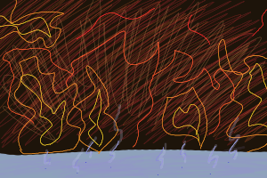

Warmth. Not the type from comfort under a blanket in lieu of cold. Not even the kind on an average summer day, where there are no clouds in a blue sky and no escape, even in the shade. But there was something similar: there was no hint of a breeze for relief. You could feel the sweat forming on your forehead.
Drip. Drip. Dripping down, only to sizzle when it made contact with a metal floor. It was then you noticed the flames blocking your exits- the window and the door. Oddly enough, there was no smoke. And once again, you had no trouble breathing in a setting where you should. Maybe the oxygen from the water scenario had stayed with you to this transition. But what was the point of being here? Just to make you sweat? To make you scared, when there felt to be no true threat?
